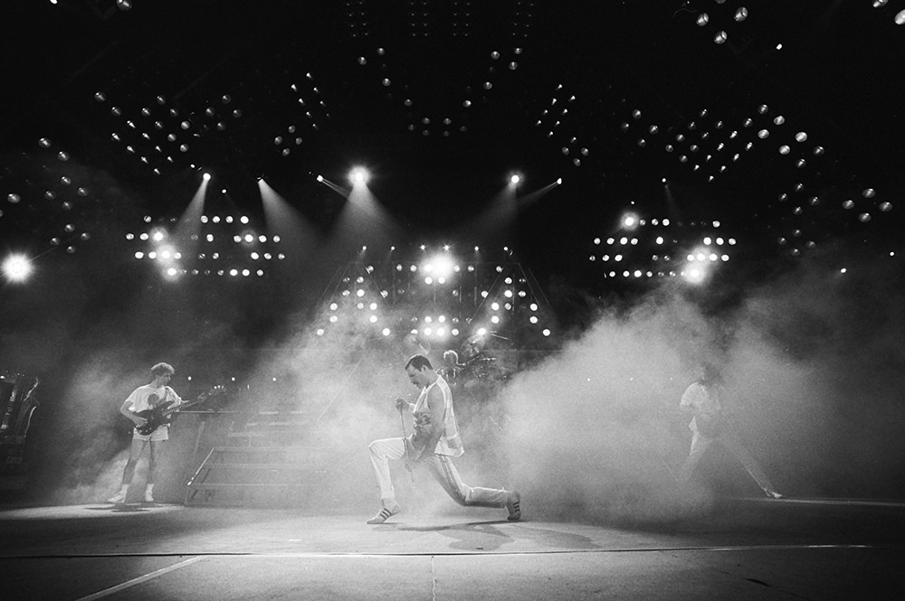
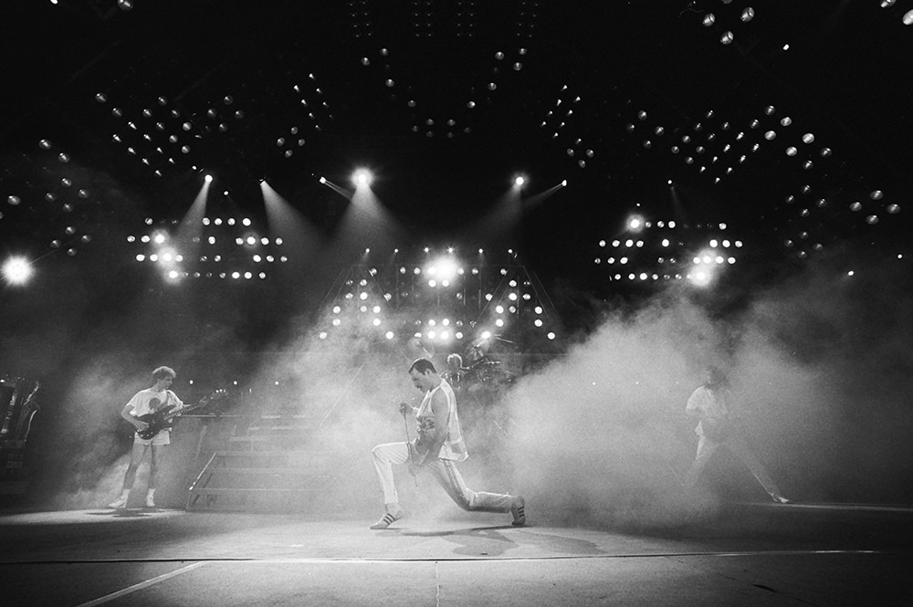

Queen are a British rock band formed in London. Their line-up included Freddie Mercury, Brian May, Roger Taylor and John Deacon.
The band released their debut album in 1973. Queen first charted in the UK with their second album, Queen II, in 1974. The latter featured Bohemian Rhapsody, stayed at number one in the UK for nine weeks.
The band's 1977 album News of the World contained We Will Rock You and We Are the Champions, which have become anthems at sporting events. By the early 1980s, Queen were one of the biggest stadium rock bands in the world. Another One Bites the Dust (1980) became their best-selling single, while their 1981 compilation album Greatest Hits is the best-selling album in the UK and is certified eight times platinum in the US. Their performance at the 1985 Live Aid concert has been ranked among the greatest in rock history by various publications.
On 23rd November 1991, Freddie Mercury announced to the world that he had AIDS and the next day he died peacefully at his home, surrounded by family and friends. As a tribute Bohemian Rhapsody / These Are The Days Of Our Lives was released as a double A-sided single to raise funds for the Terence Higgins Trust. It entered the UK chart at No. 1, where it stayed for five weeks, raising over £1,000,000 for the charity and Queen became the first band to have the same single top the UK charts twice. In December of that year Queen had 10 albums in the UK Top 100. In 1992 Freddie was awarded posthumously the BRIT’s “Outstanding Contribution to British Music” and Days Of Our Lives won Best Single. On 20th April many of the world’s top stars joined Brian, Roger and John on stage at Wembley for an emotional tribute to Freddie.
 
